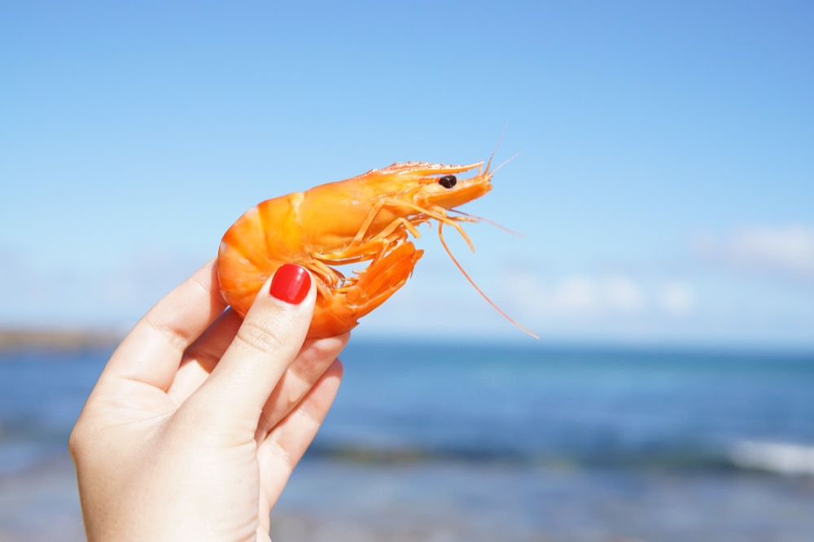
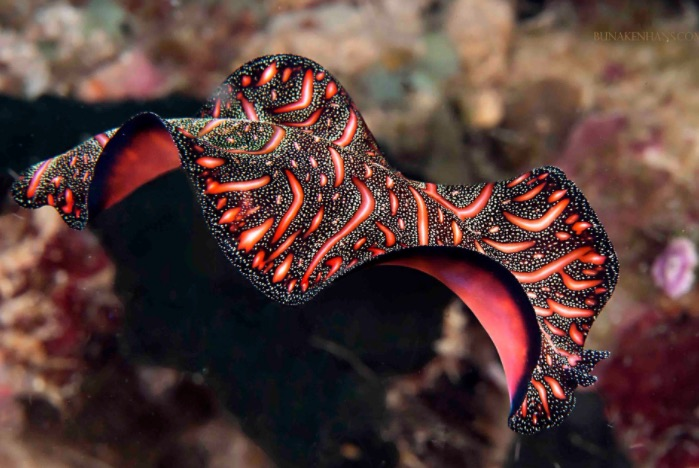

Viral Transmission in Prawns

Viral transmission pathways of gill-associated virus (GAV) and implications for aquaculture breeding programmes.

Viral transmission pathways of gill-associated virus (GAV) and implications for aquaculture breeding programmes.

A third year marine invertebrates project studying Heron Island's species diversity.
New work is added regularly. Follow along on GitHub or LinkedIn.